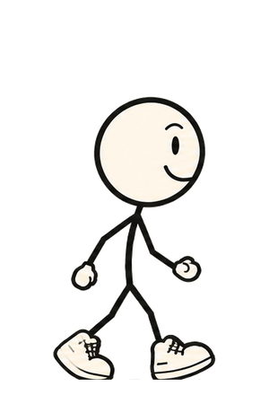
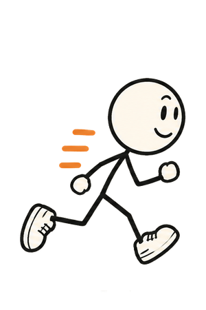
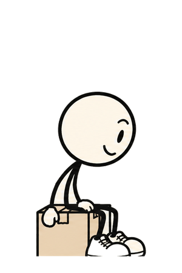
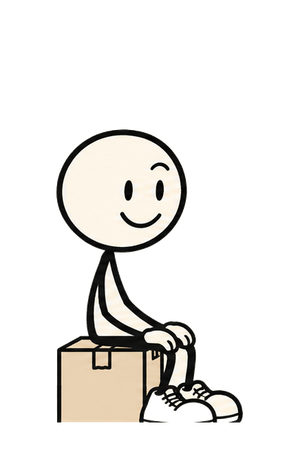
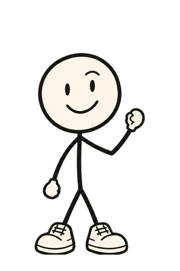
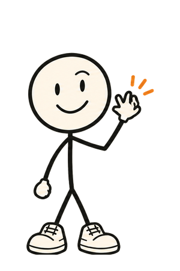
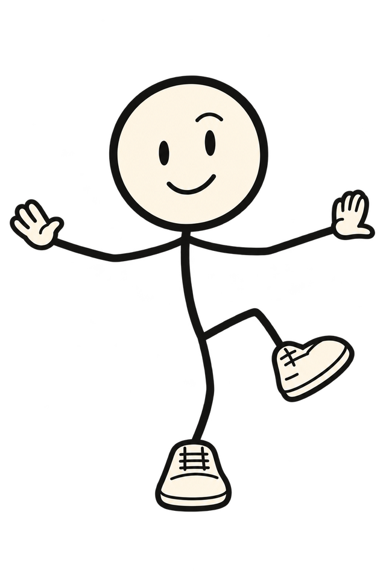

19 · Doddy between moments, and the surprise rule
Four travels from the pack's strips, then one unexpected thing per visit. All of it transform and opacity on still frames.
 3
3
5 7
7The dashed path is the homepage's chapter-button language, drawn once. Reduced motion: frame 5, already at the end of the path, line visible.
 2
2 4
4
6Running marks the one jump in the story (a different day, abroad). Reduced motion: frame 6 at the end of the path.

 inspect
inspectOne stop in the day, placed where the story turns from the big question (quantum computing) to the small one (that restaurant). Reduced motion: the kneeling frame and the question mark.
 sit 2
sit 2
sit 4
sit 5 rest
rest
wave 2
wave 4 rest
restEvery strip is the pack's own frames swapped at 8 fps; nothing is tweened between drawings, so Doddy never deforms.

Still looking.
Sneaky crouch peeks out from behind the 18:45 card (the memory one): he's hunting for the note. Slides in 30 px from the card's edge, 300 ms.

Balance. Mostly.
One-leg balance on the dashed path after 13:00, instead of the run: he stops mid-path and holds it. The line appears after 300 ms.

Long day.
Yawn on the walk before 22:30, instead of walking: the 08:45 pose comes back at the other end of the day.

Quiet bit. All true.
Shush beside the "What's real today" panel: the honesty strip gets the quiet pose. He fades in, no entrance.
- One per visit. Picked at load from the four with a seed from the date and a session flag, so a reload in the same session shows nothing new and a visit tomorrow shows a different one.
- Never early. Only after the visitor has passed two moments; the first screens stay clean.
- One thing at a time. Never within 2 s of a travel or a scene beat; if a beat is playing, the surprise waits for the next scroll stop.
- Never on the serious bits. Not in the hero, not on the join panel, not over a card's text.
- Reduced motion keeps the joke. The pose simply is there, no slide, no fade.
- Pack only. All four are existing poses; the lines are four new words each, approved by delegation on 13 October.